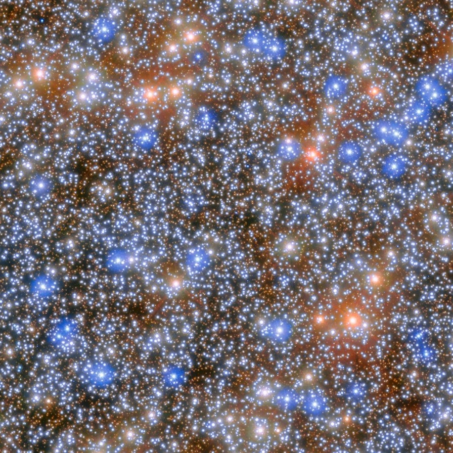
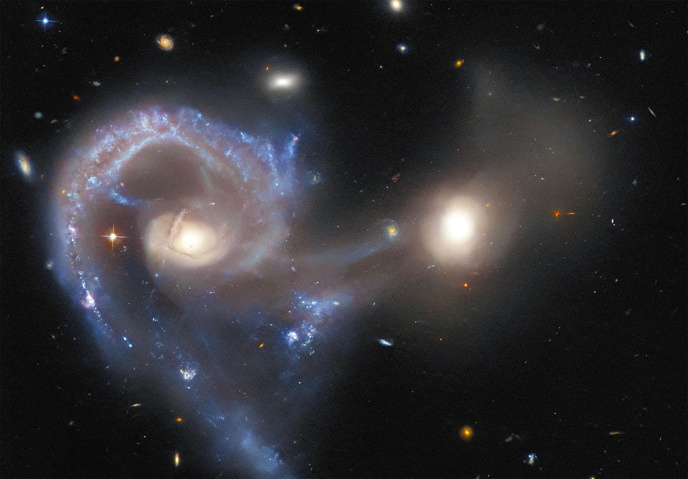
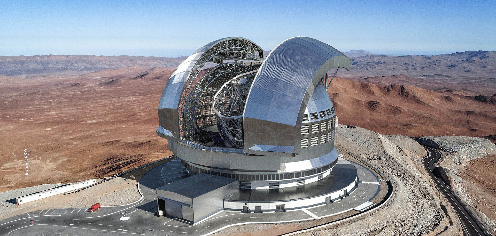
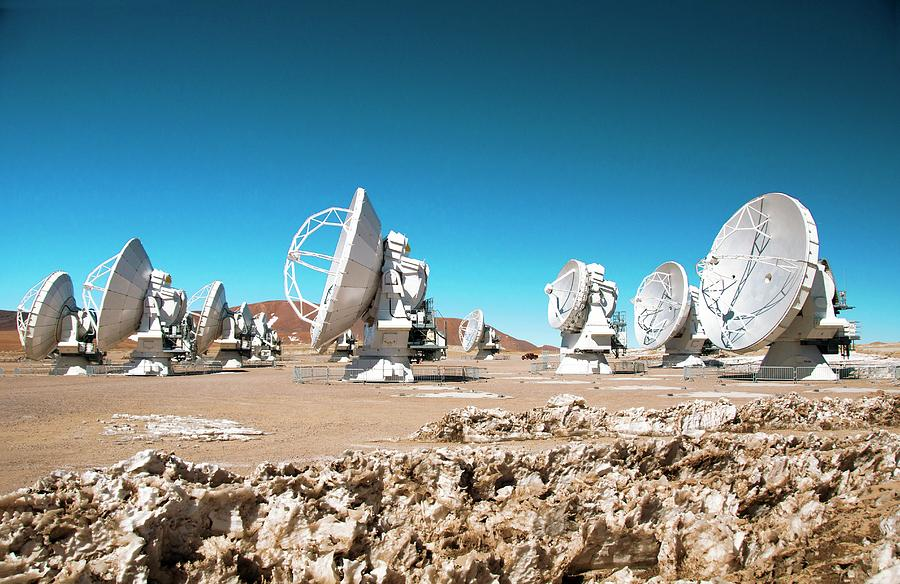
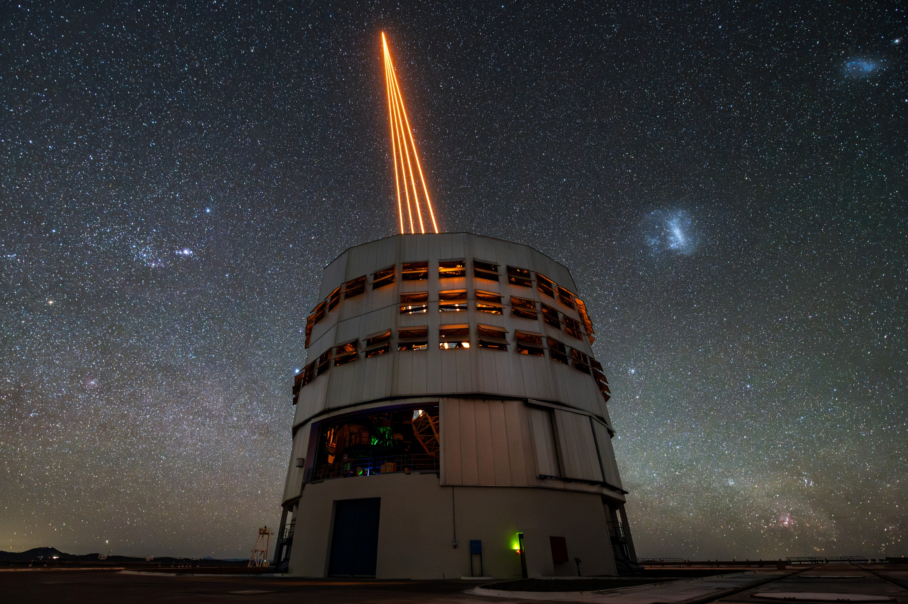

Hai Ngo Ngoc
Ph.D. student at University of Michigan, USA
NDDieu Teams - studying central black hole seeds and their
co-evolution with host galaxies across cosmic time.
USAC Astrophysics Research Group - investigating the formation of central black holes
and their co-evolution with host galaxies using world-class observatories (JWST, HST, ALMA, VLT, and ELT).
"A journey of a thousand miles begins with a single step"
Probing the Universe's
Darkest Objects
Black Hole Mass Spectrum
Simulating and measuring the masses of central black holes within galaxies, covering the full spectrum from intermediate-mass black holes (IMBHs; 1,000–1,000,000 M☉) to supermassive black holes (SMBHs; >1,000,000 M☉) using high-resolution spectroscopy.
Galaxy Formation & Evolution
Galaxy formation is a pivotal research area in modern cosmology. Analyzing galaxies at various distances helps us understand their origins and development - from nearby galaxies with detailed evolutionary histories to distant ones revealing the universe's early stages.
NDDieu Teams
Simulating ELT observations using HARMONI's ultra-high-resolution integral-field spectroscopy to examine nuclear star cluster morphology, composition, kinematics, and dynamical masses in low-mass early-type galaxies.
ALMA Molecular Gas Dynamics
Using molecular gas observations at millimeter wavelengths with ALMA to measure supermassive black hole masses in massive elliptical and spiral galaxies, establishing their growth scenarios over cosmic time.
Three Frontiers of
Black Hole Science

IMBHs in Nuclear Star Clusters
Nuclear star clusters can co-exist with massive black holes, including in the Milky Way. Finding and weighing central BHs in lower-mass galaxies remains one of the most challenging problems in observational astrophysics.
Read more →
Supermassive BHs in Dwarf Galaxies
Scaling relations between central black hole mass and host galaxy properties hint at joint co-evolution. Estimating dynamical masses at different redshifts is fundamental to establishing their growth scenarios over cosmic time.
Read more →
Supermassive Black Hole Evolutions
Massive galaxies obey a well-defined scaling relation between galaxy mass and central black hole mass. However, the relation and evolution at low-mass and ultramassive regimes is still not well understood.
Read more →Observational Facilities
We use numerous telescopes at different wavelengths to study photometry and kinematics of objects. Most are state-of-the-art, including ALMA, HST, VLT, JWST, and we look forward to the Extremely Large Telescope's ultra-high-resolution observations.


